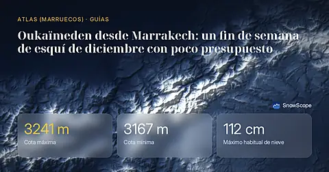
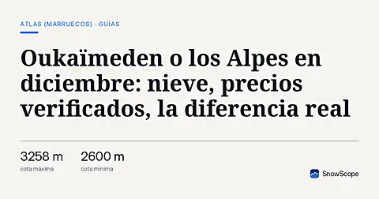
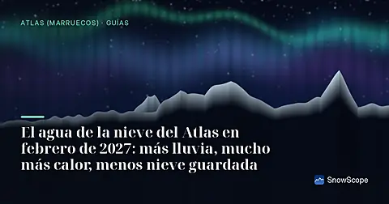

Partes de nieve · Atlas (Marruecos)
Partes de nieve diarios para esquiadores: dónde está la nieve, qué llega y dónde esquiar, a partir del mapa de nieve de SnowScope y de las estaciones de medida. Cada cifra sale de los datos del día.
Diciembre trae solo 18 cm de profundidad típica a media montaña en Oukaimeden, frente a 53 cm en marzo. La temporada temprana es escasa pero posible. Datos 13 de noviembre de 2026.

El 15 de diciembre en Michlifen, el 89% de los inviernos están casi pelados. La mejor oportunidad viene después de una tormenta, no por el calendario. Datos del 13 de noviembre de 2026.

En la estación de esquí Oukaïmeden en Marruecos, un 15 de diciembre típico trae solo 16 cm a media montaña. SnowScope muestra probabilidades de 46 inviernos de datos.

Oukaïmeden está a 50 km de Marrakech. La nieve de diciembre es escasa e impredecible: planifica alrededor de tormentas, no del calendario. Datos del 13 de noviembre de 2026.

El 15 de diciembre, Oukaïmeden a media montaña tiene 16 cm frente a Val Thorens con 89 cm. Hemos comprobado los precios de los remontes. Datos del 13 de noviembre de 2026.



Cuánta agua podría guardar la nieve del Atlas en febrero de 2027: la previsión estacional europea es unos 3 °C más cálida y más húmeda al oeste y al sur, así que las probabilidades de nieve siguen bajas en las cuencas de Marruecos.

Pronóstico de enero de 2027 para el Atlas de Marruecos: se esperan 69 millones de m³ de agua de nieve, muy por debajo de los habituales 206. Datos del 10 de noviembre de 2026.

Bou Iblane sigue desnuda en diciembre. Pronóstico estacional: 2,3 °C más cálido de lo habitual, solo se esperan 22 cm de nieve nueva, 0 cm en el suelo el 31 de diciembre. Datos: 10 de noviembre de 2026.

Oukaimeden se enfrenta a un diciembre cálido con 13 cm previstos el 31 de diciembre, muy por debajo de los 26 cm habituales. Datos del 10 de noviembre de 2026.

Un cuaderno práctico sobre Oukaïmeden, en el Alto Atlas: cuándo suele llegar la nieve, cuánta, qué laderas elegir y cómo llegar desde Marrakech.

Michlifen, cerca de Ifrane, tiene nieve en episodios cortos más que una temporada. Lo que muestran 46 inviernos pasados, por qué el espesor habitual es cero y cómo estar allí los días buenos.